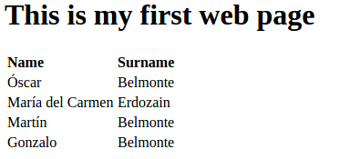
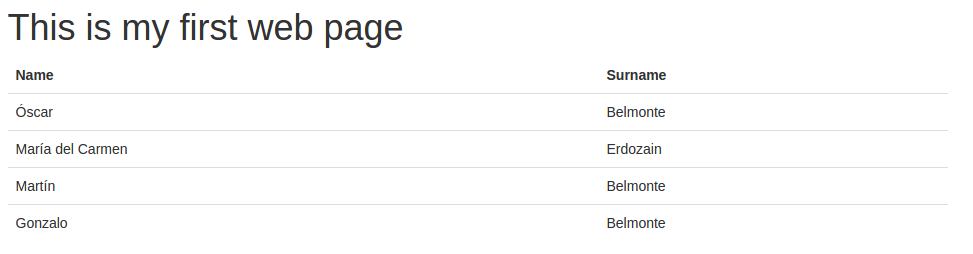
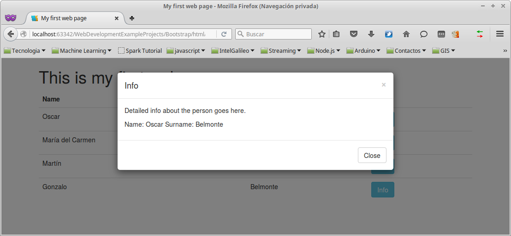
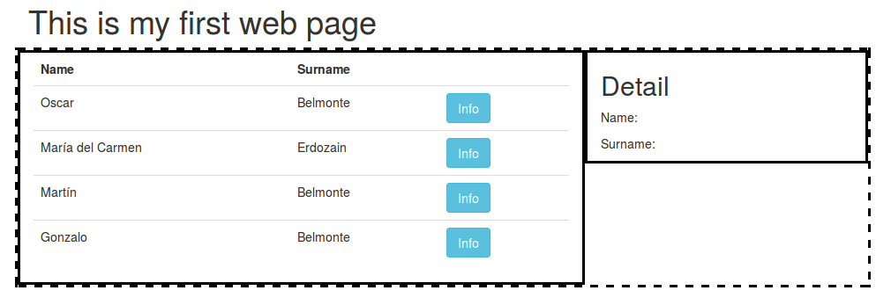

To create the layout of a web page is one of the most time consuming tasks in web development.
This task is typically done tuning the content by means of css stylesheets and javascript.
Bootstrap provides us with lots of pre-defined css classes to create the layout of a web page, and javascript to add some kind of interactivity, among other things.
Moreover, it provide us with a full set of components (buttons, modal windows, and so on) to create the Graphical User Interface (GUI) of our web page.
Let's see how it works!
Bootstrap is the most popular HTML, CSS, and JS framework for developing responsive, mobile first projects on the web.
Bootstrap provides us with a scaffolding for creating our static content.
First of all, we are going to create our first project using Bower.
$ bower init
? name: (First) ExampleProjects
? version: 0.0.1
? description: Bootstrap example
? main file: index.html
? what types of modules does this package expose?
? keywords:
? authors: Óscar Belmonte Fernández <oscar.belmonte@uji.es>
? license: MIT
? homepage:
? set currently installed components as dependencies? Yes
? add commonly ignored files to ignore list? Yes
? would you like to mark this package as private which prevents it from being accidentally published ? would you like to mark this package as private which prevents it from being accidentally published to the registry? No
{
name: 'Example projects',
version: '0.0.1',
authors: [
'Óscar Belmonte Fernández <oscar.belmonte@uji.es>'
],
description: 'Bootstrap example',
main: 'index.html',
license: 'MIT',
ignore: [
'**/.*',
'node_modules',
'bower_components',
'test',
'tests'
]
}
? Looks good? Yes
Next, lets add Bootstrap as a dependency:
$ bower install bootstrap --save
bower cached git://github.com/twbs/bootstrap.git#3.3.5
bower validate 3.3.5 against git://github.com/twbs/bootstrap.git#*
bower cached git://github.com/jquery/jquery.git#2.1.4
bower validate 2.1.4 against git://github.com/jquery/jquery.git#>= 1.9.1
bower install bootstrap#3.3.5
bower install jquery#2.1.4
bootstrap#3.3.5 bootstrap
└── jquery#2.1.4
jquery#2.1.4 jquery
This is the final bower.json file:
{
"name": "ExampleProjects",
"version": "0.0.1",
"authors": [
"Óscar Belmonte Fernández <oscar.belmonte@uji.es>"
],
"description": "Bootstrap example",
"main": "index.html",
"license": "MIT",
"ignore": [
"**/.*",
"node_modules",
"bower_components",
"test",
"tests"
],
"dependencies": {
"bootstrap": "~3.3.5"
}
}
Let's create our first static web page with standard HTML:
<!doctype html>
<html lang="en">
<head>
<meta charset="utf-8">
<meta http-equiv="X-UA-Compatible" content="IE=edge">
<meta name="viewport" content="width=device-width, initial-scale=1">
<title>My first web page</title>
</head>
<body>
<h1>This is my first web page</h1>
<table>
<thead>
<tr><td><strong>Name</strong></td><td><strong>Surname</strong></td></tr>
</thead>
<tbody>
<tr><td>Óscar</td><td>Belmonte</td></tr>
<tr><td>María del Carmen</td><td>Erdozain</td></tr>
<tr><td>Martín</td><td>Belmonte</td></tr>
<tr><td>Gonzalo</td><td>Belmonte</td></tr>
</tbody>
</table>
</body>
</html>
And this is the result:
Let's add Bootstrap style in the title section:
<title>My first web page</title>
...
<link href="../bootstrap/dist/css/bootstrap.css" rel="stylesheet">
</head>
And some div elements around the whole page:
<body>
<div class="container">
<div class="starter-template">
<h1>This is my first web page</h1>
<table class="table table-hover">
...
</table>
</div>
</div>
</body>
Now, it must look like:
<!doctype html>
<html lang="en">
<head>
<meta charset="utf-8">
<meta http-equiv="X-UA-Compatible" content="IE=edge">
<meta name="viewport" content="width=device-width, initial-scale=1">
<title>My first web page</title>
<link href="bootstrap/dist/css/bootstrap.css" rel="stylesheet">
</head>
<body>
<div class="container">
<div class="starter-template">
<h1>This is my first web page</h1>
<table class="table table-hover">
<thead>
<tr><td><strong>Name</strong></td><td><strong>Surname</strong></td></tr>
</thead>
<tbody>
<tr><td>Óscar</td><td>Belmonte</td></tr>
<tr><td>María del Carmen</td><td>Erdozain</td></tr>
<tr><td>Martín</td><td>Belmonte</td></tr>
<tr><td>Gonzalo</td><td>Belmonte</td></tr>
</tbody>
</table>
</div>
</div>
</body>
</html>
Finally, This is the result of applying the Bootstrap style:
A key point in the development process is to refactor your code frequently.
Refactor means to re-write your code improving its structure and readability.
In this first example, refactor means, first af all separation of concerns.
At this point, we are mixing the data itself with the way we present it: The content of the table is inside the table. This is ok for static content, but we are learning to develop web applications and they are always dinamic.
Let's start with separation of concerns.
First things first, remove all data in the table:
<table class="table table-hover">
<thead>
<tr><td><strong>Name</strong></td><td><strong>Surname</strong></td></tr>
</thead>
<tbody id="peopleBody">
</tbody>
</table>
Note that we have added an id to the table body.
Let's move the data to a javascript array. So, let's create a new file js/dataSourde.js, an type in:
var people = [
{
name:"Oscar",
surname:"Belmonte"
},
{
name:"María del Carmen",
surname:"Erdozain"
},
{
name:"Martín",
surname:"Belmonte"
},
{
name:"Gonzalo",
surname:"Belmonte"
}
]
Now, let's define, in the same javascript file, a function which will include these data in the web page:
var getData = function() {
var text = "";
for(i = 0; i < people.length; i++) {
text += "<tr><td>" + people[i].name + "</td><td>" + people[i].surname + "</td><td></td></tr>";
}
document.getElementById("peopleBody").innerHTML = text;
}
Note that we are updating the HTML document.
Re-load and you will see the same web page as before:
But now, the data we are presenting its separated from the way we are presenting it. That's very good.
Bootstarp provides lots of different elements to be added to our web pages.
To start using them, we must include the following scripts in the web page header:
<script src="../bower_components/jquery/dist/jquery.js"></script>
<script src="../bower_components/bootstrap/dist/js/bootstrap.js"></script> Before our own javascript file.
Let's first start with buttons:
<td><button type="button" class="btn btn-info">Info</button></td>
The buttons work, but they do nothing useful right now. It would be fancy if we can get the detail for each person by pressing each button.
Let's use a Modal window, note the id name and surname:
<!-- Modal -->
<div class="modal fade" id="myModal" tabindex="-1" role="dialog" aria-labelledby="myModalLabel">
<div class="modal-dialog" role="document">
<div class="modal-content">
<div class="modal-header">
<button type="button" class="close" data-dismiss="modal" aria-label="Close"><span aria-hidden="true">×</span></button>
<h4 class="modal-title" id="myModalLabel">Info</h4>
</div>
<div class="modal-body">
<p>Detailed info about the person goes here.</p>
<p>Name: <span id="name"></span> Surname: <span id="surname"></span></p>
</div>
<div class="modal-footer">
<button type="button" class="btn btn-default" data-dismiss="modal">Close</button>
</div>
</div>
</div>
</div>
Fine, now, let's link each button with the modal (be careful, this is a long line of code):
text += "<tr><td>" + people[i].name + "</td><td>" + people[i].surname + "</td><td><button type='button' class='btn btn-info' data-toggle='modal' data-target='#myModal' onclick='currentIndex(" + i + ")'>Info</button></td></tr>";
And finally the javascript function that updates the current index for the data:
var currentIndex = function(index) {
document.getElementById("name").innerHTML = people[index].name;
document.getElementById("surname").innerHTML = people[index].surname;
}
Done!!! This is how our web applications looks like:
The grid system provides us with an easy way to stack the content of a web page:
<div class="container">
<div class="starter-template">
<h1>This is my first web page</h1>
<div class="row" style="border: black dashed">
<div class="col-md-8" style="border: black solid">
<table class="table table-hover">
<thead>
<tr><td><strong>Name</strong></td><td><strong>Surname</strong></td></tr>
</thead>
<tbody id="peopleBody">
<script>
getData();
</script>
</tbody>
</table>
</div>
<div class="col-md-4" style="border: black solid">
<h2>Detail</h2>
<p>Name: <span id="name"></span></p>
<p></p>Surname: <span id="surname"></span></p>
</div>
</div>
</div>
</div>
This is the result:
We have seen how to easily and quickly create the GUI of our web page application using Bootstrap.
It provide us with a full set of components, and commodity css classes to define the layout of our applications.
We have only seen a sneak peed of all functionality it provides.